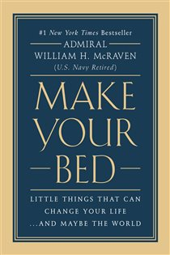

Library › Self-Improvement
Make Your Bed — Summary & Key Lessons

Little things that can change your life... and maybe the world — 10 lessons from Navy SEAL training.
📖 OPEN THE FULL INTERACTIVE BREAKDOWN →🌐 Read it in Hindi, Hinglish, Gujarati, Tamil & 22 more languages — free, with audio.
💡 The Big Idea
Expanded from the University of Texas commencement speech viewed tens of millions of times, McRaven's ten lessons compress 37 years of Navy service — and six months of SEAL training's deliberate crucible — into a manual for ordinary adversity. The architecture: start with a completed task (the bed — pride and momentum from the first act of the day), accept help (nobody paddles the boat alone), measure hearts not flippers, embrace the sugar cookie (unfairness is the curriculum, not the exception), fail forward (the circus list builds the strong), dare the obstacles head-first, stand your ground against the sharks, be your calmest in the darkest moment, sing when you're up to your neck in mud, and never, ever ring the bell. Each lesson is a SEAL story married to a combat or life application — deceptively simple, deliberately universal.
🧠 The 4 Key Lessons
Lesson 1: Start With a Made Bed — and a Boat You Can't Paddle Alone
Lessons 1–2: Make Your Bed / Find Someone to Help You Paddle
SEAL instructors inspected beds each dawn with absurd rigor — hospital corners, taut covers, centered pillow — and the wisdom hid in the absurdity: completing the day's first task perfectly delivers a small pride that cascades into the next task and the next; and on catastrophic days, you return to a made bed — evidence that YOU made — and encouragement that tomorrow can improve. It's the keystone-habit argument in military dress: the little things done right are the rehearsal for the big things, and no one who can't do the small things right will ever do the great things right. Lesson two arrives by rubber raft: crews of seven paddling through pounding surf learn that no one — not the strongest paddler, not the best officer — survives alone; every significant achievement requires a shared boat, and needing help is a competence, not a confession.
📖 Example: McRaven's proof-by-inversion: decades later, the four-star admiral commanding all special operations still made his bed every morning — and notes that the habit's value showed most after his career's worst days (a parachute accident that nearly ended it,… Read the full example →
⚡ Do this: Make the bed tomorrow — properly — and stack one more first-hour completion behind it (dishes done, list written). Then audit your boat: name the paddlers you're refusing to ask for help, and make one overdue ask this week.
Lesson 2: Measure Hearts, Eat the Sugar Cookie, Visit the Circus
Lessons 3–5: Measure a Person by the Size of Their Heart / Get Over Being a Sugar Cookie / Don't Be Afraid of the Circus
Three lessons on unfairness and endurance. HEARTS NOT FLIPPERS: the munchkin crew — the little guys under 5'5" — routinely out-swam and outlasted the muscle-bound; SEAL training systematically embarrassed every prejudice about what capability looks like, and life repeats the lesson to anyone paying attention. THE SUGAR COOKIE: instructors would fail a perfect uniform inspection arbitrarily, sending the student — wet, then rolled in sand — through the day as a 'sugar cookie'; the point was never the uniform: some days you do everything right and get punished anyway, because the world isn't fair — and the sooner you stop expecting fairness, the faster you convert energy from grievance to forward motion. THE CIRCUS: failures at daily standards earned two extra hours of calisthenics — the dreaded 'circus' — but the students who lived on the circus list, failing and training, failing and training, got STRONGER: the punishment was secretly the program, and repeated failure, endured, became the exact fitness that passed the final tests.
📖 Example: The sugar-cookie chapter carries the book's hardest story: Marc Thee, a student who did everything right — perfect inspections, top performance — failed anyway on an instructor's whim, and asked McRaven, seething, why. The instructor's answer became the… Read the full example →
⚡ Do this: Catch yourself measuring by flippers this week (credentials, size, polish) and deliberately re-measure one person by heart. Then take your most recent sugar-cookie moment — punished despite doing it right — write 'noted; moving' beneath it, and reinvest the grievance hours into the next attempt. If you're on a circus list somewhere, reframe it: the extra reps ARE the advantage.
Lesson 3: Slide Head-First, Face the Sharks, Be Calm in the Dark
Lessons 6–8: Slide Down the Obstacle Head First / Don't Back Down From the Sharks / Rise to the Occasion
Three lessons on fear. HEAD-FIRST: the obstacle course's slide-for-life was taken feet-first and cautious by everyone — until a student risked the head-first technique, halving the record; McRaven's record fell only when he accepted the risk everyone could see but few would take: prudence past its expiry date is just fear with a resume. THE SHARKS: night swims off San Clemente ran through shark waters, and the doctrine was explicit — if one circles, do not swim away, do not act afraid; stand your ground, and if it charges, punch the snout: every arena has sharks, and they feed exclusively on visible fear. CALM IN THE DARK: the training's scariest evolution — attacking a ship's keel at night, where it's blackest and coldest under the hull — taught the job's core: the moment of maximum darkness is precisely when you must be your most composed, because everyone else's panic makes the calm operator the only functioning asset.
📖 Example: The 2011 bin Laden raid — which McRaven commanded — reads as these lessons operationalized, and he draws the line himself: a helicopter crashed INSIDE the compound in the mission's opening seconds (the darkest moment arriving early), and the assault force,… Read the full example →
⚡ Do this: Identify your feet-first habit: one place you're taking the safe technique on a risk everyone can see — and take it head-first this month. Name your current shark (the intimidator, the fear) and rehearse the snout-punch: the prepared, unafraid response. And pre-decide your dark-moment protocol: when the next crisis hits, your job is composure first, solution second — in that order.
Lesson 4: Sing in the Mud, and Never Ring the Bell
Lessons 9–10: Give People Hope / Never, Ever Quit
The final pair is the book's soul. THE MUD: Hell Week's ninth evolution put the class in freezing mudflats overnight — chins in the mud, hypothermia negotiating on the instructors' behalf ('five of you quit, and everyone gets warm') — until one voice started singing; then another; then the class. The instructors threatened; the singing continued; and the mud became survivable, because ONE person's hope is contagious enough to hold a hundred: the power of a single voice choosing defiance-by-morale is a leadership tool available to anyone in any mud. THE BELL: a brass bell hung in the training compound — ring it three times, and the suffering ends: no more runs, swims, cold, or humiliation; just quit. McRaven's final lesson strips everything else away: the students who made it weren't the strongest or fastest — they were the ones who, whatever the day did to them, did not ring. 'If you want to change the world, don't ever, ever ring the bell.'
📖 Example: McRaven's coda ties the ten lessons to the men and women he served with — the wounded who rebuilt, the Rangers who returned to duty on prosthetics, the families who absorbed the ultimate loss and kept serving others: none of them, he notes, rang the bell,… Read the full example →
⚡ Do this: Be the singer once this week: in whatever mud your team is in, contribute the first note of morale — the joke, the reframe, the 'we've got this' — and watch the contagion. Then locate your bell: name, in writing, the quit you've been circling. Decide about it once — 'I don't ring' — and let the decision, not the daily mood, answer every future negotiation.
✅ 5-Step Action Plan
- Make the bed daily; stack a second first-hour completion behind it.
- Ask the overdue ask; re-measure one person by heart.
- Write 'noted; moving' under your last sugar cookie; use the circus reps.
- Take one obstacle head-first; rehearse the shark protocol.
- Sing first in the mud — and put your no-bell decision in writing.
💬 Best Quotes from Make Your Bed
- “If you want to change the world, start off by making your bed.”
- “It is easy to blame your lot in life on some outside force... but you cannot let this be an excuse.”
- “If you want to change the world, don't ever, ever ring the bell.”
Interactive version: mark lessons as read, listen in your language, share quote cards.